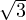
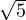
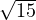
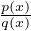
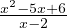
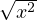

Lineaarvõrrandite y = 1.5x - 3 ja y = -x + 2 graafikud on kujutatud järgmisel joonisel. Lineaarvõrrandi vabaliige näitab y-telje punkti, millega vastav sirge lõikub, antud sirgete korral on nendeks punktideks (0;-3) ja (0;2).

Võrduse moodustab kaks võrdusmärgiga ühendatud avaldist. Näiteks 3x + 2 = 23,
 ⋅ = , (a + b)2 = a2 + 2ab + b2.
Samasuseks nimetatakse võrdust, mis on tõene kõigi lubatavate muutuja väärtuste
korral. Heaks näiteks on valemid, näiteks: (a + b)2 = a2 + 2ab + b2.
Võrrandiks nimetatakse võrdust, mis sisaldab muutujaid ja kus vähemalt üks
muutuja on tundmatu, mille väärtust otsitakse. Näiteks: x + 7 = 2(x + 3).
Võrrandi lahenditeks nimetatakse tundmatute väärtusi, mille võrrandisse
asendamisel saame tõese võrduse ehk samasuse. Näiteks lineaarvõrrandi
x + 6 = 4(x + 3) lahendiks on -2, sest -2 + 6 = 4(-2 + 3).
Võrrandid on samaväärsed, kui neil on samad tundmatud ja nende kõik lahendid
on ühised või puuduvad mõlemal võrrandil lahendid.
Võrrandisüsteemiks nimetatakse mitmest võrrandist koosnevat süsteemi.
Võrrandisüsteemi lahendid rahuldavad kõiki võrrandisüsteemis olevaid
võrrandeid.
Üksteisest sõltumatuteks võrranditeks nimetatakse võrrandeid, mis pole saadud
teineteisest korrutamise või liitmise teel.
Võrrandisüsteemil on ühene lahend (või lahend puudub), kui temas olevad
võrrandid on teineteisest sõltumatud ja erinevaid tundmatuid on sama palju kui
erinevaid võrrandeid. Võrrandisüsteemil on lõpmata palju lahendeid,
kui erinevaid tundmatuid on võrrandisüsteemis rohkem kui sõltumatuid
võrrandeid.
Lineaarvõrrandiks ehk esimese astme võrrandiks nimetatakse võrrandit, kus on
kaks tundmatut, nende aste on maksimaalselt üks ja vähemalt ühe tundmatu aste on
üks. Lineaarvõrrandis on kummalgi võrduse poolel polünoomid. Lineaarvõrrandi
graafikuks on sirge. Mistahes lineaarvõrrandit tundmatutega x ja y saab viia
kujule y = ax + b.
Lineaarvõrrandite y = 1.5x - 3 ja y = -x + 2 graafikud on kujutatud järgmisel
joonisel. Lineaarvõrrandi vabaliige näitab y-telje punkti, millega vastav sirge lõikub,
antud sirgete korral on nendeks punktideks (0;-3) ja (0;2).
Ruutvõrrandiks ehk teise astme võrrandiks nimetatakse võrrandit, kus
tundmatute aste on maksimaalselt kaks ja vähemalt ühe tundmatu aste on kaks.
Ruutvõrrandis on võrduse mõlemal poolel polünoomid. Ruutvõrrandi graafikuks
on parabool. Ühe muutujaga ruutvõrrand on teisendatav kujule ax2 + bx + c = 0,
kus a≠0.
Taandatud ruutvõrrandiks nimetatakse ruutvõrrandit, kus ruutliikme kordajaks
on üks. Seega on taandatud ruutvõrrand kujul x2 + p ⋅ x + q = 0, kus p ja q on
konstandid.
Lahendamine:
Ruutvõrrandi y = x2 - 1 graafikut kujutatakse järgneval joonisel. Ruutvõrrandi
lahenditeks on need x-i väärtused, kus ruutvõrrandi graafik lõikab x-telge.

Murdvõrrandiks nimetatakse võrrandit kujul  = 0, kus p(x) ja q(x) on
polünoomid x suhtes. Murdvõrrandi lahendamiseks lahendatakse võrrand p(x) = 0 ja
q(x)≠0, sest kui murru nimetaja võrdub nulliga, siis võrdub terve murd nulliga ja
nulliga jagamine ei ole defineeritud.
Näiteks:
 = 0 lahendamiseks lahendame x2 - 5x + 6 = 0 ja saame x
1 = 2 ja x2 = 3.
Nüüd kontrollime tingimust x - 2≠0 ja saame, et x≠2 ning seega sobib lahendiks
ainult 3.
Juurvõrrandiks nimetatakse võrrandit, kus tundmatu asub juuritavas. Näiteks
 = 9.
Juurvõrrandi lahendamiseks astendatakse enne mõlemat võrrandi poolt ühe ja
sama astendajaga, eelneva võrrandi korral astendades mõlemat võrrandi poolt
kahega saame ruutvõrrandi x2 = 81, mida me juba oskame lahendada.
Lahendamisel saadud lahendeid tuleb kindlasti esialgses võrrandis
kontrollida, kuna nende hulgas võib olla võõrlahendeid.
Absoluutväärtusega võrrandiks nimetatakse võrrandit, mis sisaldab
absoluutväärtust tundmatust. Absoluutväärtusega võrrandi lahendamiseks tuleb
võrrand, mis sisaldab ühte absoluutväärtust jagada kaheks, ühes võrrandis
eeldatakse, absoluutväärtuse sees oleva tehte või tundmatu väärtus on positiivne ja
teises negatiivne.
Näiteks, kui tegu on võrrandiga ∣x + 2∣ = 7, siis lahendame (x + 2) = 7 ja
-(x + 2) = 7 ja saame x=5 and x=-9.
Võrrandisüsteemiks nimetatakse mitmest võrrandist koosnevat süsteemi.
Võrrandisüsteemi lahendid rahuldavad kõiki võrrandisüsteemis olevaid
võrrandeid.
Võrrandisüsteemil on ühene lahend (või lahend puudub), kui temas olevad
võrrandid on teineteisest sõltumatud ja erinevaid tundmatuid on sama palju kui
erinevaid võrrandeid. Võrrandisüsteemil on lõpmata palju lahendeid, kui
erinevaid tundmatuid on võrrandisüsteemis rohkem kui sõltumatuid võrrandeid.
Võrrandisüsteemi lahendamiseks saab kasutada liitmisvõtet, asendamisvõtet ja
determinante.
Avaldist kujul ad - bc nimetatakse teist järku determinandiks ja tähistatakse tabeliga, milles on kaks rida ja kaks veergu
Niisugust tabelit nimetatakse maatriksiks. Determinantide abil saab lahendada
võrrandisüsteeme.
Võrrandisüsteemi
lahendid avalduvad kujul
ja
Teisendades vastavad avaldised determinantide kujule saame
ja
Lahendades vastavad determinandid, saadakse võrrandisüsteemi lahendid x ja y.